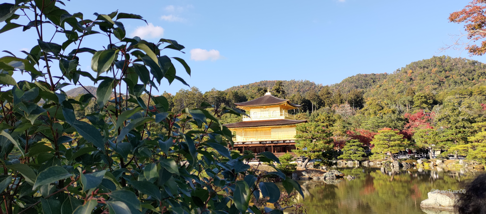

清水寺 夜楓
楓夜季,夜間特別開放


楓夜季,夜間特別開放


地址 : １１番地 Higashikujo Nishisannocho, Minami Ward, Kyoto, 601-8003日本

超好吃布丁
在JR嵯峨嵐山站附近好吃的海鮮丼
有「京都的廚房」之稱商店街
This is a longer card with supporting text below as a natural lead-in to additional content.
This is a longer card with supporting text below as a natural lead-in to additional content. This content is a little bit longer.